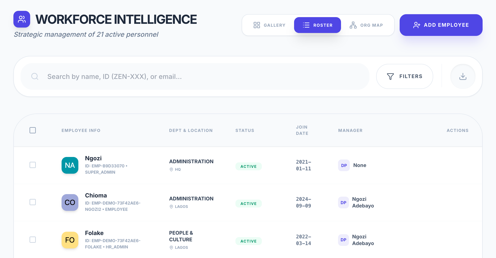
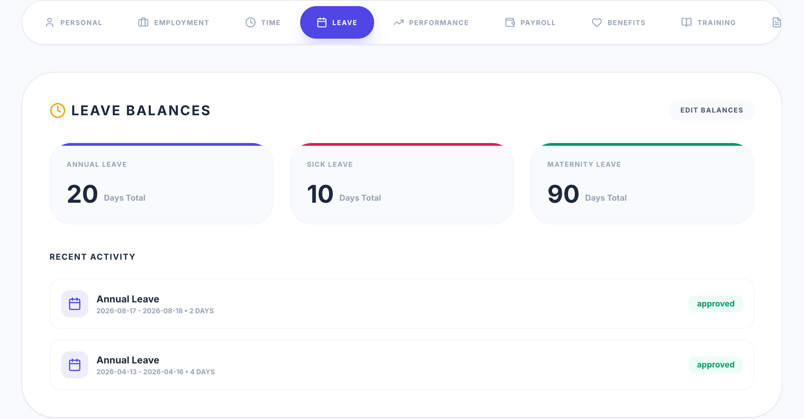
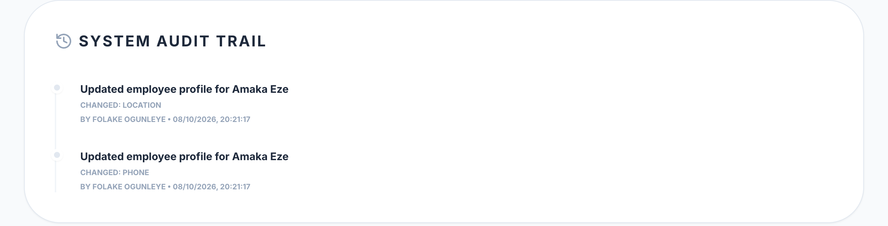

(a)
Workforce roster: department, location, status, join date and line manager per employee

(b)
Profile of Amaka Eze, Leave tab: entitlement by leave type and leave history

(c)
The same profile, Audit tab: which field was changed, by whom, and when